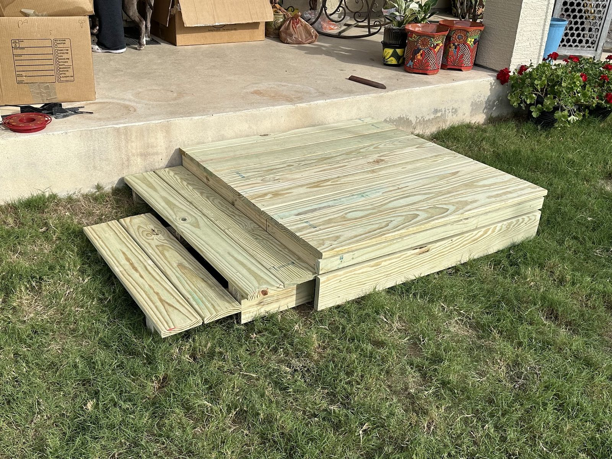

Skip to content
Handyman service · Boerne, TX
(210) 744-9708
BMac's Handyman Service, LLC
Home
Services
Our work
Reviews
About
Get a quote
Menu
Home
Services
Our work
Reviews
About
Get a quote
Call (210) 744-9708
BMac's · Boerne
Our work
Steps, shelving, doors and repairs from real jobs.
All
Repairs
Around the house
Carpentry
Storage
Doors
Porch post to repair
Hallway with pendant lights
Brick home with a covered patio
Entry with a lantern light
Window and roofline detail

New deck steps
Steps and railing
Closet shelving
Interior door
A new tabletop
Call (210) 744-9708